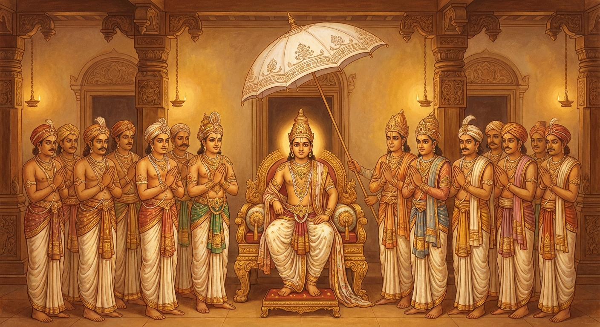

8. ගාමණී ජාතකය (8)
“අපි අතරමානාන” (නොඉක්මන් වන්නන්ගේ පවා) යන මේ ජාතක කතාව බුදුරජාණන් වහන්සේ ජේතවනාරාමයේ වැඩ වසන සමයෙහි වීර්යය අත්හළ භික්ෂුවක් අරබයා දේශනා කළ සේක. මේ ජාතකයේ වර්තමාන කතාව සහ අතීත කතාව ඒකාදස නිපාතයේ එන සංවර ජාතකයේදී ප්රකට වන්නේය. ඒ කතාව එහි ද මෙහි ද එක සමානය. වෙනස් වන්නේ ගාථා පමණි. ගාමණී කුමාරයා බෝධිසත්වයන්ගේ අවවාදයෙහි පිහිටා, සොහොයුරන් සියයකට බාලයා වුව ද ඒ සොහොයුරන් පිරිවරා ධවල ඡත්රය යට උතුම් පර්යංකයෙහි හිඳ, තමා ලැබූ යසස හා සම්පත් දෙස බලා, “මගේ මේ යස ඉසුරු සම්පත මගේ ආචාර්යයන් වහන්සේ සතු දෙයකි” යි සතුටු වී මෙම ප්රීති වාක්යය (උදානය) ප්රකාශ කළේය.

“නුවණැත්තන්ගේ අවවාදයෙහි පිහිටා හදිසි නොවී කටයුතු කරන්නන්ගේ පවා ඵල අපේක්ෂාව හෙවත් ප්රාර්ථනාව ඉටු වේ. මම මුහුකුරා ගිය බ්රහ්ම චර්යාව ඇත්තෙමි. එම්බා ගාමණී, මෙසේ දැනගන්න.”
එහි “අපි” යනු නිපාත මාත්රයකි. “අතරමානානං” යනු පණ්ඩිතයන්ගේ උපදෙසෙහි පිහිටා හදිසි නොවී, නොකලබලව, උපායෙන් කටයුතු කරන්නන් ය. “ඵලාසාව සමිජ්ඣති” යනු යම් සේ පතන ලද ඵලය පිළිබඳ ආශාව හෙවත් බලාපොරොත්තුව, ඒ ඵලය ලැබීමෙන් ඉටු වේ ම ය. එහි “ඵලාසාව” යනු ආශා ඵලයයි, එනම් පතන ලද පරිදි ඵලය ඉටුවීම යනු එහි අර්ථයයි. “විපක්ක බ්රහ්මචරියොස්මි” යන මෙහි සතර සංග්රහ වස්තූන්, ශ්රේෂ්ඨ චර්යාවන් බැවින් ‘බ්රහ්මචරිය’ නම් වේ. එය ද ඊට මුල් වූ යසස හා සම්පත ලැබූ බැවින් විපාක දුන් (මුහුකුරා ගිය) බව කියැවේ. ඔහුට යම් කීර්තියක් ලැබුණේ ද, එය ද උසස් යන අර්ථයෙන් ‘බ්රහ්මචරිය’ නම් වේ. එහෙයින් “මුහුකුරා ගිය බ්රහ්මචරිය ඇත්තේ වෙමි” යි කීවේය. “එවං ජානාහි ගාමණී” යන්නෙහි, සමහර තැනක ගම් වැසියා ද ගම් දෙටුවා ද ‘ගාමණී’ නම් වේ. මෙහි දී සියලු ජනතාවට නායක වූ තමා අරබයා කීවේය. “එම්බා ගාමණී (ගාමණී කුමාරය), ඔබ මේ කරුණ මෙසේ දැනගන්න. ඔබ ආචාර්යවරයා නිසා සොහොයුරන් සියයක් ඉක්මවා මේ මහා රාජ්යයට පැමිණියේ වෙමි” යි උදන් ඇනීය.
ඔහු රාජ්යයට පත් වූ කල්හි සත් අට දිනක් ඇවෑමෙන් සියලු සොහොයුරෝ තම තමන්ගේ වාසස්ථානයන්ට ගියහ. ගාමණී රජතුමා දැහැමෙන් රාජ්යය කොට කම් වූ පරිදි මියගිය අතර, බෝධිසත්වයන් වහන්සේ ද පින්කම් කොට කම් වූ පරිදි මිය පරලොව ගියහ.
බුදුරජාණන් වහන්සේ මේ ධර්ම දේශනාව ගෙනහැර දක්වා චතුරාර්ය සත්යය ප්රකාශ කළ සේක. සත්ය දේශනාව අවසානයේ වීර්යය අත්හළ භික්ෂුව රහත් ඵලයෙහි පිහිටියේය. ශාස්තෘන් වහන්සේ කතා වස්තූන් දෙක ගළපා අනුසන්ධි සම්බන්ධ කොට මෙම ජාතකය නිමවා වදාළ සේක. “එකල ගාමණී කුමාරයා වූයේ මේ වීර්යය අත්හළ භික්ෂුවයි. ආචාර්යවරයා වූයේ මම ම වෙමි.”
අටවැනි වූ ගාමණී ජාතක වර්ණනාවයි.